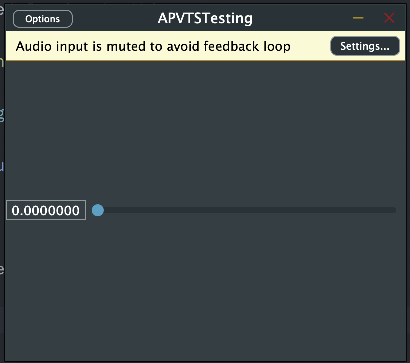

Implementing an APVTS
What's an APVTS?
An APVTS (AudioProcessorValueTreeState) is a core class in JUCE that provides a powerful and flexible way to manage parameters for audio plugins. It acts as a central repository for all the plugin’s adjustable parameters (knobs, sliders, switches, etc.).
Additionally it automatically keeps the GUI controls synchronized with the underlying parameter values. When you change a knob in the GUI, APVTS updates the corresponding parameter value, and vice versa.
Implementation
Adding a APVTS to your plugin
Define a function, that will create the parameters, used in the audio plugin. Write this in the private section of your AudioProcessor.
file: PluginProcessor.h
private:
juce::AudioProcessorValueTreeState::ParameterLayout createParameterLayout();
Next, we need to implement the just defined function. Write this at the bottom of the file.
Note: You need to change the classname from
AudioProcessorto your AudioProcessor name.
file: PluginProcessor.cpp
juce::AudioProcessorValueTreeState::ParameterLayout AudioProcessor::createParameterLayout()
{
// defining a ParameterLayout
juce::AudioProcessorValueTreeState::ParameterLayout layout;
// create a ParameterFloat
auto parameter = std::make_unique<juce::AudioParameterFloat>
(
juce::ParameterID
{
"param", // identifier
1 // versionHint
},
"param", // parameterName
juce::NormalisableRange<float>
(
0.0f, // rangeStart
1.0f, // rangeEnd
0.000001f, // intervalValue
1.f // skewFactor
),
0.0f // defaultValue
);
// add the parameter to the layout
layout.add
(
std::move(parameter)
);
return layout;
}
Define the APVTS on the bottom of the public section of your PluginProcessor:
file: PluginProcessor.h
public:
juce::AudioProcessorValueTreeState apvts{
*this,
nullptr,
"Parameters",
createParameterLayout()
}
After those steps, you now should have a working APVTS in your project.
Linking a slider to a parameter in the APVTS
If everything works correctly, the APVTS should now be able to attach the parameters to a slider via a helper class. This can be done like the following.
First make sure, that you have a slider to use. Here we will create a own test slider. We will define this above the JUCE_DECLARE_NON_COPYABLE_WITH_LEAK_DETECTOR (APVTSTestingAudioProcessorEditor) but below the APVTSTestingAudioProcessor& audioProcessor;. We also define the slider in the private seciton of our class.
file: PluginEditor.h
private:
AudioProcessor& audioProcessor; // Rename AudioProcessor with your AudioProcessor name
juce::Slider slider;
JUCE_DECLARE_NON_COPYABLE_WITH_LEAK_DETECTOR (APVTSTestingAudioProcessorEditor)
};
Next, we add the slider to the GUI. Here we will need to add several things in several functions.
In the constructor, add and make the slider visible:
file: PluginEditor.cpp
AudioProcessorEditor::AudioProcessorEditor (AudioProcessor& p) // Rename AudioProcessorEditor with your AudioProcessorEditor name
: AudioProcessorEditor (&p), audioProcessor (p)
{
setSize (400, 300);
addAndMakeVisible(slider);
}
change the resized funcion to this:
file: PluginEditor.h
void APVTSTestingAudioProcessorEditor::resized()
{
slider.setBounds(getBounds());
}
If we now run the program, it should display a slider:

After that, we need to attach the parameter to the slider.
We can do this via the juce::AudioProcessorValueTreeState::SliderAttachment helper class. We need to initialize the SliderAttachment and give it the apvts from the AudioProcessor. Next, we tell the SliderAttachment, what parameter we want to attach to. In this case, this will be the "param". And lastly, we need to tell the SliderAttachment, what slider to attach the parameter to. In this case, the slider's name is just slider.
The private section of the header should now look as following:
file: PluginEditor.h
private:
APVTSTestingAudioProcessor& audioProcessor;
juce::Slider slider;
juce::AudioProcessorValueTreeState::SliderAttachment sliderAttachment{audioProcessor.apvts, "param", slider};
JUCE_DECLARE_NON_COPYABLE_WITH_LEAK_DETECTOR (APVTSTestingAudioProcessorEditor)
If you done everything correctly, the SliderAttachment should now work and the slider now will go from 0 to 1. If you change the slider, the parameter automatically gets changed too.